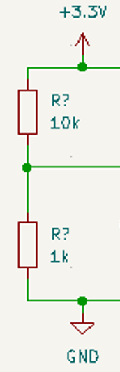
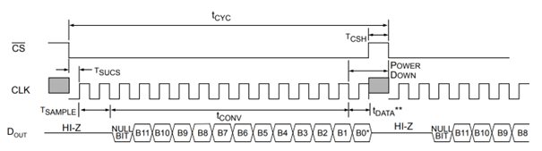
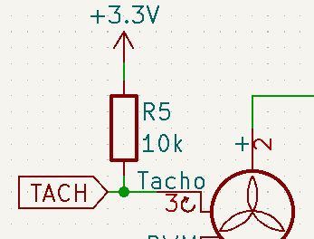

Relevant concepts
Contents
Relevant concepts#
Voltage Divider#
A Voltage Divider is a simple is a simple circuit to achieve a certain voltage, when only a higher voltage is available.
.
As shown in the Figure above, its just two Resistors in Series, and the output is taken from the bottom two wires that exit to the right (the upper one is the reduced Voltage).
ADC#
ADC stands for Analog to Digital Converter. These kind of ICs are used where the analog world meats a Digital Processor or in this case FPGA.
ADCs convert an Anolog Voltage into a digital Signal which is then processible by the FPGA.
The ADC communicates with the FPGA (or Micro Controller) via a communication Protokoll like SPI or I2C
In this work a MCP3201 is used, which is a single Channel 12bit ADC that communicates over SPI. The SPI Bus is explained in the following segment.
SPI#

Operational Amplifier#
Open Collector IO / Tach Signal of Fan#
The Open Collector Input Output Pins, are often used in Micro Controllers or ICs.
When active the device simply turns on an internal Mosfet, and connects the Pin to ground.
Open Collectors are often used in combination with an external or internal Pull-Up Resistor. To whichever Voltage level the Resistor is connected is the maximum input Voltage for the external device.

In this project, the fans have Open Collector Pins on the Tach signal. The Voltage is then pulled up to 3.3V in Hardware.
This way the Fan outputs a 3.3V to Ground PWM Signal which is readable by the FPGA.
The PWM Signal frequency also has to be divided in half, because the magnetic sensor in the Fan gets activated twice per Rotation of the fan.
PT1000#
Clock Divider#
Seven Segment Display#
Introduce the relevant concepts to understand the problem and your solution.